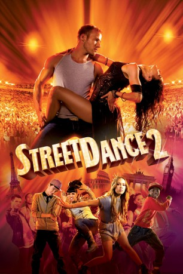

#10952 StreetDance 2
 
 IMDB-Wertung: 5.7 / 10
IMDB-Wertung: 5.7 / 10  Tomatometer: 41
Tomatometer: 41  Metascore: 0
Metascore: 0 
Sein Leben lang träumt Streetdancer Ash von seinem großen Moment. Die Chance dazu bietet sich nach einer schweren Demütigung durch die Streetdance-Champions 'Invincible'. Mit den besten europäischen Streetdance-Talenten baut Ash jetzt seine eigene Crew auf, findet in der Fusion mit Salsa einen Ansatz, 'Invincible' vom Thron stoßen zu können und in der feurigen Salsa-Tänzerin Eva eine Frau, die nicht nur auf dem Parkett seine Träume erfüllen könnte. Doch dafür muss Ash nicht nur Salsa, sondern auch die Liebe lernen.
Jahr: 2012
Dauer: 85 Minuten
FSK: 0
Land: England Studio: SquareOne EntertainmentTonspuren: DTS - ,
Untertitel:
Auflösung: 1080p (1920x1040) Größe: 7485 MB
Genre: Drama, Musik, Liebe
Regisseur: Max Giwa, Dania Pasquini
Drehbuch: Jane English
Soundtrack:
Darsteller:
 Falk Hentschel als Ash
Falk Hentschel als Ash Sofia Boutella als Eva
Sofia Boutella als Eva- George Sampson als Eddie
- Akai Osei als Junior
 Tom Conti als Manu
Tom Conti als Manu- Christopher Toler als Invincible Crew
- Nicholas Stewart als Invincible Crew
- Chris Brooker als Extra
- Sandra Michelle als Dancer
- Ailema Sousa als Crowd Member
- Rose Wakesho als Guest
- Paul Hughes als Commuter (uncredited)
- Maxence Kouzoubachian als The waiter (uncredited)
 Jess Liaudin als French bouncer (uncredited)
Jess Liaudin als French bouncer (uncredited)- Fredi 'Kruga' Nwaka als Security (uncredited)
 Deborah Rosan als Female security guard (uncredited)
Deborah Rosan als Female security guard (uncredited) Glenn Webster als Dance Off Spectator (uncredited)
Glenn Webster als Dance Off Spectator (uncredited)- Stephanie Nguyen als Steph
- Delphine Nguyen als Yoyo
- Niek Traa als Legend
- Elisabetta Di Carlo als Bam Bam
- Samuel Revell als Tino
- Kaito Masai als Terabyte
- Ali Ramdani als Ali
- Ndedi Ma-Sellu als Killa
- Brice Larrieu als Skorpion
- Maykel Fonts als Lucien
- Anwar Burton als Vince
- Kejamlea Howell als Invincible Crew
- Marion Motin als Invincible Crew
- Aziz Baki als Invincible Crew
- Yaman Okur als Invincible Crew
- Fabrice Labrana als Invincible Crew
- Marie 'Poppins' Bonnevay als Invincible Crew
- Mehdi Ouachek als Invincible Crew
- Flawless als The Surge Crew
- Marlon Wallen als Swoosh
- Nathan Kabongo als The Surge Crew
- Paul Samuels als The Surge Crew
- Anthony Duncan als The Surge Crew
- Simon Smith als The Surge Crew
- Leroy Dos Santos als The Surge Crew
- Allan Kabeja als The Surge Crew
- Christian Alozie als The Surge Crew
- Paul Steadman als The Surge Crew
- Nathan Gordon als The Surge Crew
- Mick Viry als Boxing Ring / Latin Party Couple 1
- Erell Niane als Boxing Ring / Latin Party Couple 1
- Pablo Baez als Boxing Ring / Latin Party Couple 2
- Jennifer Silvas als Boxing Ring / Latin Party Couple 2
Datei: X:\4-Tetralogie(M-Z)\StreetDance\StreetDance 2 (2012, FSK0, 1920x1040).mkv seit 08.04.2019
Festplatte: HD Collection-3(N-Z)-6(A-Z)
 Es gibt insgesamt 7 Filme in der Gruppe '4-Tetralogie(M-Z)\StreetDance'
Es gibt insgesamt 7 Filme in der Gruppe '4-Tetralogie(M-Z)\StreetDance'